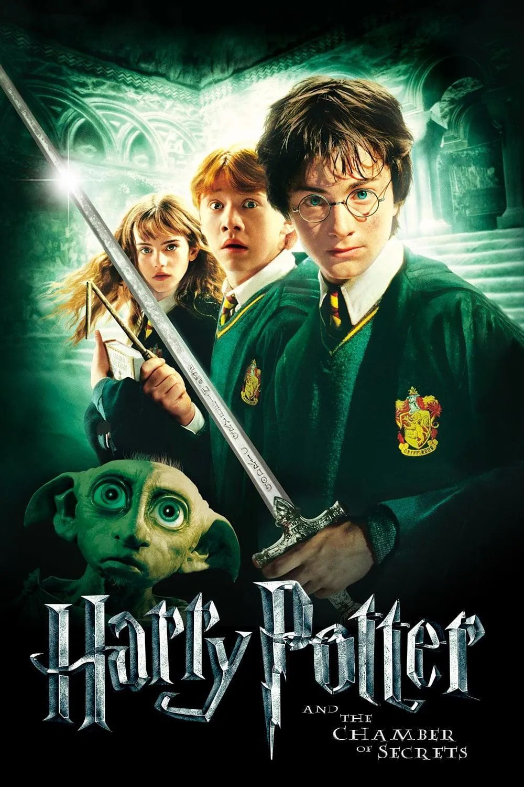

Sobre Nós
Criado em 2024, Patronum foi criada com o intuito de fornecer um ambiente mais dinâmico aos fãs da franquia Harry Potter.
O nome Patronum se deriva do fato de que na saga, memórias felizes fazem com que um animal em forma de expecto patronum salve um personagem.
Nossa maior missão é que as pessoas sintam interessadas pela leitura e também pelo descobrimento dessa obra da autora J.K Rowling, caso queira saber mais, nos envie um email.
Malfeito Feito !

Livros mais procurados


Harry Potter
E A Pedra Filosofal
Harry Potter e a Pedra Filosofal acompanha Harry descobrindo ser um bruxo e ingressando em Hogwarts, onde faz amigos e enfrenta Voldemort, que busca a Pedra Filosofal para voltar ao poder.

Harry Potter
E A Câmara Secreta
Harry Potter e a Câmara Secreta mostra Harry retornando a Hogwarts, onde descobre a existência de uma câmara oculta e enfrenta um monstro libertado por Tom Riddle, a versão jovem de Voldemort.
Harry Potter
E O Prisioneiro De Azkaban
Harry Potter e o Prisioneiro de Azkaban segue Harry ao descobrir que Sirius Black, seu padrinho fugitivo, é inocente. Ele enfrenta dementadores e revela segredos sobre sua família e a traição que levou à prisão de Sirius.

Harry Potter
E O Cálice De Fogo
Harry Potter e o Cálice de Fogo narra o quarto ano de Harry em Hogwarts, onde ele é inesperadamente escolhido para participar do Torneio Tribruxo. Enquanto enfrenta perigosas tarefas, Harry descobre um plano sombrio de Voldemort para retornar ao poder.
Harry Potter
E A Ordem Da Fenix
Harry Potter e a Ordem da Fênix segue Harry enfrentando a crescente influência de Voldemort e o Ministério da Magia, que nega o retorno do bruxo das trevas. Ele se junta à Ordem da Fênix, um grupo de resistência, e forma a Armada de Dumbledore para lutar contra a opressão e se preparar para o confronto iminente.

Harry Potter
E O Enigma Do Príncipe
Harry Potter e o Enigma do Príncipe acompanha Harry em seu sexto ano em Hogwarts, onde descobre mais sobre o passado de Voldemort através das memórias de Dumbledore. Enquanto a ameaça do Senhor das Trevas aumenta, Harry e seus amigos se preparam para a batalha, enfrentando traições e perdas.
Harry Potter
E As Reliquias Da Morte Parte 1
Harry Potter e as Relíquias da Morte - Parte 1 acompanha Harry, Rony e Hermione enquanto buscam as horcruxes de Voldemort e enfrentam os Comensais da Morte, testando sua amizade e coragem.

Harry Potter
E As Reliquias Da Morte Parte 2
Harry Potter e as Relíquias da Morte - Parte 2 culmina na batalha final em Hogwarts, onde Harry e seus amigos confrontam Voldemort e seus seguidores. Com a verdade sobre as horcruxes revelada, eles lutam por suas vidas e pelo futuro do mundo bruxo.

Animais Fantásticos
E Onde Habitam
Animais Fantásticos e Onde Habitam acompanha Newt Scamander em Nova York, onde criaturas mágicas escapam de sua maleta. Ele se envolve em eventos que revelam a tensão entre bruxos e trouxas enquanto tenta proteger suas criaturas.
Animais Fantásticos 2
Os Crimes De Grindelwald
Animais Fantásticos: Os Crimes de Grindelwald segue Newt Scamander em sua missão para deter Grindelwald e proteger criaturas mágicas, explorando a luta entre bruxos e trouxas.
Animais Fantásticos 3
Os Segredos De Dumbledore
Animais Fantásticos: Os Segredos de Dumbledore acompanha Newt Scamander e seus aliados lutando contra Grindelwald, revelando segredos sobre Dumbledore em uma batalha pelo futuro do mundo bruxo.




Fale Conosco
Nome Completo
Email
Assunto
Assunto
Mensagem